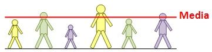
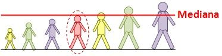
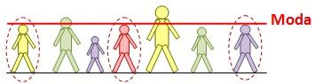
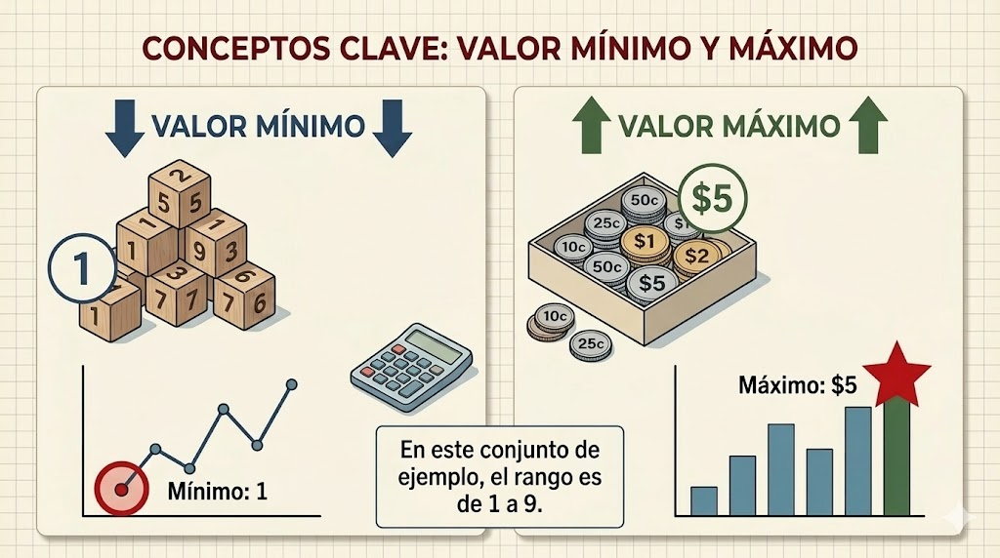
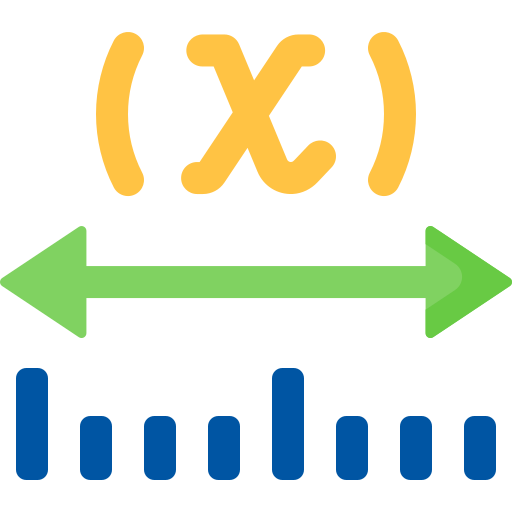
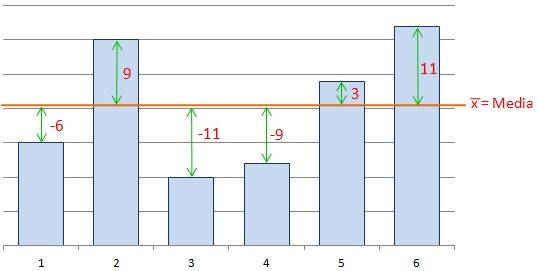
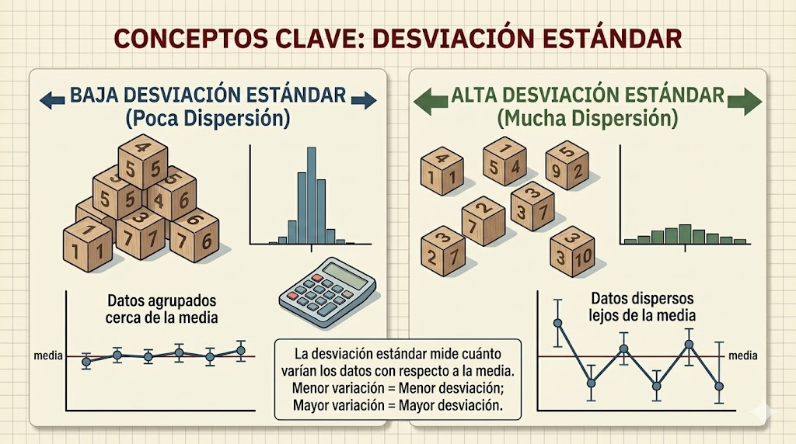

Este sitio web presenta los conceptos fundamentales de la estadística descriptiva, con definiciones claras y ejemplos prácticos para facilitar su comprensión.
Usa el menú de navegación superior para explorar cada tema.
La estadística es una rama de las matemáticas que se encarga de recopilar, organizar, analizar e interpretar datos numéricos. Su objetivo es obtener conclusiones útiles a partir de la información recopilada.
Existen dos tipos principales:
Un profesor registra las calificaciones de 5 estudiantes: 7, 8, 6, 9, 10.
Con estadística descriptiva podemos calcular el promedio, la mediana, el valor más alto y el más bajo de esas calificaciones para entender mejor el rendimiento del grupo.

La media aritmética, comúnmente llamada promedio, es el resultado de sumar todos los valores de un conjunto de datos y dividir esa suma entre la cantidad total de valores.
Fórmula: Media = Suma de todos los valores / Cantidad de valores
Las edades de 5 personas son: 20, 25, 30, 22, 28
Paso 1: Sumamos todos los valores: 20 + 25 + 30 + 22 + 28 = 125
Paso 2: Dividimos entre la cantidad de valores (5): 125 / 5 = 25
La media de las edades es 25 años.
// --- Calcular la MEDIA (Promedio) ---
let datos = [20, 25, 30, 22, 28];
let suma = 0;
for (let i = 0; i < datos.length; i++) {
suma = suma + datos[i];
}
let media = suma / datos.length;
console.log("La media es: " + media);
El siguiente ejemplo usa un arreglo de 20 objetos precargados, cada uno con el nombre de un estudiante y su calificación. Al hacer clic en el botón, JavaScript recorre el arreglo, suma todas las calificaciones y calcula la media.
Haz clic en el botón para ver el gráfico de barras con las calificaciones de los 20 estudiantes.

La mediana es el valor que se encuentra exactamente en el centro de un conjunto de datos cuando estos están ordenados de menor a mayor.
Si la cantidad de datos es impar, la mediana es el valor central. Si es par, la mediana es el promedio de los dos valores centrales.
Datos: 3, 7, 1, 9, 5
Paso 1: Ordenamos de menor a mayor: 1, 3, 5, 7, 9
Paso 2: El valor del centro es 5
La mediana es 5.
Datos: 2, 4, 6, 8
Paso 1: Ya están ordenados: 2, 4, 6, 8
Paso 2: Los dos valores centrales son 4 y 6
Paso 3: Promediamos: (4 + 6) / 2 = 5
La mediana es 5.
// --- Calcular la MEDIANA ---
let datos = [3, 7, 1, 9, 5];
datos.sort(function(a, b) {
return a - b;
});
let centro = Math.floor(datos.length / 2);
if (datos.length % 2 === 0) {
mediana = (datos[centro - 1] + datos[centro]) / 2;
} else {
mediana = datos[centro];
}
console.log("La mediana es: " + mediana);
El siguiente ejemplo usa un arreglo de 20 objetos precargados, cada uno con el nombre de un estudiante y su calificación. Al hacer clic en el botón, JavaScript ordena las calificaciones de menor a mayor y encuentra el valor central.
Haz clic en el botón para ver el gráfico de barras horizontales con las calificaciones ordenadas y la línea de mediana como referencia.

La moda es el valor que más se repite dentro de un conjunto de datos. Un conjunto puede tener una moda (unimodal), dos modas (bimodal), varias modas (multimodal) o ninguna moda si todos los valores aparecen la misma cantidad de veces.
Calificaciones de un grupo: 8, 7, 9, 8, 10, 8, 7
Contamos las repeticiones:
El valor que más se repite es el 8, por lo tanto la moda es 8.
// --- Calcular la MODA en JavaScript ---
let datos = [8, 7, 9, 8, 10, 8, 7];
let conteos = [];
for (let i = 0; i < datos.length; i++) {
let encontrado = false;
for (let j = 0; j < conteos.length; j++) {
if (conteos[j].valor === datos[i]) {
conteos[j].conteo = conteos[j].conteo + 1;
encontrado = true;
}
}
if (encontrado === false) {
conteos.push({ valor: datos[i], conteo: 1 });
}
}
let moda = conteos[0].valor;
let maxConteo = conteos[0].conteo;
for (let k = 1; k < conteos.length; k++) {
if (conteos[k].conteo > maxConteo) {
maxConteo = conteos[k].conteo;
moda = conteos[k].valor;
}
}
console.log("La moda es: " + moda);
El siguiente ejemplo usa un arreglo de 20 objetos precargados. Al hacer clic, JavaScript cuenta cuántas veces se repite cada calificación y determina la moda.
Haz clic en el botón para ver cuántas veces se repite cada calificación. La barra más alta representa la moda.

El valor mínimo es el número más pequeño dentro de un conjunto de datos.
El valor máximo es el número más grande dentro de un conjunto de datos.
Estos dos valores nos permiten conocer los extremos del conjunto y son la base para calcular el rango.
Temperaturas registradas durante una semana: 18, 22, 15, 28, 20, 25, 17
Ordenamos de menor a mayor: 15, 17, 18, 20, 22, 25, 28
Valor mínimo: 15°C
Valor máximo: 28°C
// --- Calcular el MINIMO y MAXIMO en JavaScript ---
let datos = [18, 22, 15, 28, 20, 25, 17];
let minimo = datos[0];
let maximo = datos[0];
for (let i = 1; i < datos.length; i++) {
if (datos[i] < minimo) {
minimo = datos[i];
}
if (datos[i] > maximo) {
maximo = datos[i];
}
}
console.log("Valor minimo: " + minimo);
console.log("Valor maximo: " + maximo);
Al hacer clic, JavaScript recorre el arreglo de 20 estudiantes y encuentra la calificación más baja y la más alta.
Haz clic para ver el gráfico de barras verticales. La barra roja es el mínimo y la barra verde es el máximo.

El rango es la diferencia entre el valor máximo y el valor mínimo de un conjunto de datos. Nos indica qué tan dispersos o separados están los datos.
Fórmula: Rango = Valor Máximo - Valor Mínimo
Temperaturas de la semana: 15, 17, 18, 20, 22, 25, 28
Valor máximo: 28
Valor mínimo: 15
Rango = 28 - 15 = 13°C
Esto significa que la temperatura varió 13 grados durante la semana.
// --- Calcular el RANGO en JavaScript ---
let datos = [15, 17, 18, 20, 22, 25, 28];
let minimo = datos[0];
let maximo = datos[0];
for (let i = 1; i < datos.length; i++) {
if (datos[i] < minimo) {
minimo = datos[i];
}
if (datos[i] > maximo) {
maximo = datos[i];
}
}
let rango = maximo - minimo;
console.log("El rango es: " + rango);
Al hacer clic, JavaScript calcula el rango restando el valor mínimo al valor máximo del arreglo de 20 estudiantes.
Haz clic para ver el gráfico. Las barras roja y verde marcan el mínimo y el máximo, y la zona entre ellas representa el rango.

La varianza mide qué tan lejos están los datos respecto a la media (promedio). Si la varianza es alta, los datos están muy dispersos. Si es baja, los datos están cercanos al promedio.
Pasos para calcularla:
Datos: 4, 8, 6, 2, 10
Paso 1 - Media: (4 + 8 + 6 + 2 + 10) / 5 = 6
Paso 2 - Diferencias: (4-6), (8-6), (6-6), (2-6), (10-6) = -2, 2, 0, -4, 4
Paso 3 - Cuadrados: 4, 4, 0, 16, 16
Paso 4 - Suma de cuadrados: 4 + 4 + 0 + 16 + 16 = 40
Paso 5 - Varianza: 40 / 5 = 8
La varianza es 8.
// --- Calcular la VARIANZA en JavaScript ---
let datos = [4, 8, 6, 2, 10];
let suma = 0;
for (let i = 0; i < datos.length; i++) {
suma = suma + datos[i];
}
let media = suma / datos.length;
let sumaCuadrados = 0;
for (let i = 0; i < datos.length; i++) {
let diferencia = datos[i] - media;
let cuadrado = diferencia * diferencia;
sumaCuadrados = sumaCuadrados + cuadrado;
}
let varianza = sumaCuadrados / datos.length;
console.log("La varianza es: " + varianza);
Al hacer clic, JavaScript calcula la varianza usando las calificaciones de los 20 estudiantes cargados desde el archivo datos.js.
Haz clic para ver un gráfico donde se comparan las calificaciones con la media del grupo. Esto permite visualizar qué tan alejados están los datos respecto al promedio.

La desviación estándar es la raíz cuadrada de la varianza. Nos indica, en las mismas unidades de los datos originales, qué tanto se desvían los valores respecto a la media.
Fórmula: Desviación Estándar = √Varianza
Una desviación estándar baja indica que los datos están agrupados cerca del promedio. Una desviación alta indica que están muy dispersos.
Usando los datos del ejemplo anterior: 4, 8, 6, 2, 10
Ya calculamos que la varianza es 8.
Desviación estándar = √8 = 2.83 (aproximadamente)
Esto significa que, en promedio, los datos se desvían 2.83 unidades respecto a la media de 6.
// --- Calcular la DESVIACION ESTANDAR en JavaScript ---
let datos = [4, 8, 6, 2, 10];
let suma = 0;
for (let i = 0; i < datos.length; i++) {
suma = suma + datos[i];
}
let media = suma / datos.length;
let sumaCuadrados = 0;
for (let i = 0; i < datos.length; i++) {
let diferencia = datos[i] - media;
sumaCuadrados = sumaCuadrados + (diferencia * diferencia);
}
let varianza = sumaCuadrados / datos.length;
let desviacion = Math.sqrt(varianza);
console.log("La desviacion estandar es: " + desviacion.toFixed(2));
Al hacer clic, JavaScript calcula la desviación estándar usando las calificaciones de los 20 estudiantes cargados desde datos.js.
Haz clic para ver un gráfico donde se comparan las calificaciones con la media y se muestra visualmente la dispersión de los datos.
Responde las siguientes preguntas sobre estadística descriptiva. Al finalizar, presiona el botón para conocer tu calificación.